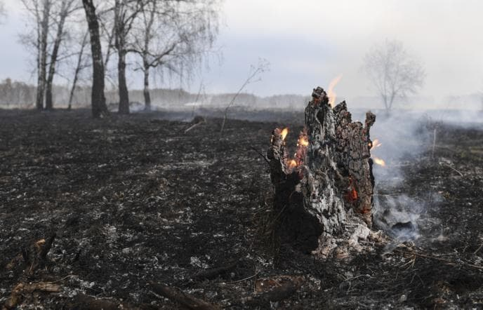

Однажды, мы с товарищем, обратили внимание, что из леса въется дымок. Прошли сутки. Ничего не меняется. Дым на том же месте. Странно, кому там понадобилось что-то жечь? Туристов у нас не бывает. Тем более, поздняя осень. Пошли посмотреть. Людей не обнаружили. А обнаружили, лежащее дерево, которое медленно тлеет от комеля к вершине. На тот момент превратился в золу только комель.
Горело не огнем, а медленным тлением (типа, биквордов шнур). Вокруг себя огонь не распространяло. Мы удивились. Объяснения не нашли, пожали плечами и отправились назад, трусливо. Прошла неделя. Мы опять оказались на даче и опять обратили внимание на дымок на том же месте. Опять пошли посмотреть. Дерево истлело, практически полностью, но "фитиль" продолжал движение от основания к вершине. На фотографии этот момент.
Когда мы оказались у дерева в третий раз, сгорело все. Включая сучья и палочки. Истлел каждый сучочек до последней веточки-иголочки. На земле остался отпечаток дерева из золы, как, если с него сняли проекцию в натуральную величину. При этом, не воспламенилось ничего постороннего.
Мы объяснения увиденному по сей день не имеем. Может быть кто-то встречался с чем то подобным? Или готов объяснить? Поделитесь знанием.